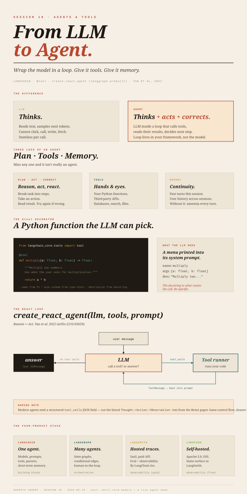

From LLMto Agent.
Wrap the model in a loop. Give it tools it can call. The first piece of agent infrastructure is one decorator.
LLMGraphTransformer, and the two-channel retriever that fused fuzzy entity lookup with vector similarity. Session 18 starts a new arc — agents. An agent is still an LLM at the centre, but it’s wrapped in a loop that can call tools (your Python functions, third-party APIs, your databases) and remembers past turns. From here forward every project is agent-shaped: single agent in LangChain (S18–S19), multi-agent orchestration in LangGraph (S20+), then MCP and the skills layer at the end of the arc.

Ollama, before we leave the model picker
Every demo so far has hit OpenAI. The lecturer wanted to flag a free, local alternative before we move on.
Ollama is a local-model runtime. Install it on your machine, run ollama pull <model> from the terminal, and the model is downloaded to your disk. After that the model runs entirely on your own hardware — no API key, no per-token cost, no internet round-trip. There’s also a desktop chat UI that ships with it (“a local ChatGPT”). The catalogue includes Meta’s Llama family, Google’s Gemma, Alibaba’s Qwen, and OpenAI’s recently-released open-weights model gpt-oss (e.g. gpt-oss:20b, gpt-oss:120b). Sizes range from ~1 GB (small Qwen variants) to 60+ GB (gpt-oss:120b).
From LangChain you swap the model object — same invoke() / stream() interface as ChatOpenAI:
# pip install -U langchain-ollama
from langchain_ollama import ChatOllama
llm = ChatOllama(model="qwen2.5")
llm.invoke("Who are you?")The model name passed to ChatOllama must match a model you have already pulled. Two separate steps: ollama pull qwen2.5 downloads the weights; the Python constructor calls the locally-running Ollama server.
Think ChatOpenAI and ChatOllama as two implementations of the same ChatModel interface. Swapping is one line; the rest of your code (prompts, chains, agents) is unchanged. Same shape as swapping a JpaRepository implementation behind the interface — the consumer doesn’t notice.
What is an agent?
Definition first, components second.
An LLM is a transformer-based model that reads text and produces text. Given a prompt, it samples the most-probable continuation token by token. It can reason in the sense that its training has compressed enough patterns that its outputs often look like reasoning — chain-of-thought, comparing options, drawing a conclusion. But a plain LLM only emits text. It cannot click a button, hit an API, or write a file.
An agent is an LLM placed inside a loop that lets it do three additional things:
- Act — call out to tools: your Python functions, third-party APIs, databases, search. The LLM picks the tool; the runtime executes it; the result comes back into the conversation.
- Self-correct — when a tool returns an error or an unexpected result, the LLM sees that on the next turn and can try a different tool, different arguments, or change its plan.
- Remember — past turns of the conversation (and sometimes longer-term context) are carried forward so the agent doesn’t start from scratch every turn.
LLM thinks. Agent thinks and acts and self-corrects.
The “loop” is not running inside the model. The model is stateless per call — the same prompt always goes in, a fresh sample comes out. The loop is your code (or LangGraph’s code) collecting tool calls, executing them, appending results to the message list, and calling the model again. Every “memory” the agent appears to have is text the loop puts back into the prompt. There is no hidden agent state inside the LLM between calls. This matters when debugging.
What can a tool be?
Anything the LLM might want to use:
- A Python function you write with your own business logic (the upcoding-detection example below).
- A third-party API wrapper — Tavily web search, Gmail send, Google Calendar create-event, GitHub create-PR, ElevenLabs text-to-speech, Apify web scraping.
- A database query helper — Postgres / Neo4j / vector store, usually wrapped so the LLM gets a high-level “query orders by customer” rather than raw SQL.
The bigger point: almost every consumer product has an API, and “the LLM can use Tool X” generalises to “the LLM can use almost any software product you can name.” That’s the agentic-AI moment — software ceases to be UI you click and becomes capability the LLM composes on your behalf.
AI agent vs Agentic AI
One agent. One job.
- Single LLM in a tool loop.
- Built entirely in LangChain.
- e.g. write a function, draft a reply.
Multiple agents. Complex job.
- Many agents collaborating.
- Shared memory, handoffs, parallelism.
- Needs LangGraph for orchestration.
A single agent ≈ one service-layer bean. Agentic AI ≈ several beans collaborating through a workflow engine, where the engine decides who runs next, who waits, who gets the message. LangGraph is that workflow engine.
An agent isn’t a long-running JVM process with internal state. Conceptually each “agent” is a stateless function (messages, tools, prompt) → next message, called in a loop. The orchestration framework holds the state in a graph between calls; the model itself never does. If you assume agent = thread, you’ll over-engineer concurrency and under-engineer observability.
The bottleneck moved from coding to context
The LLM is now genuinely excellent at coding. The lecturer’s blunt framing: coding is no longer the bottleneck — business knowledge is. Two failure modes dominate:
- Bad tools / bad logic. If your
calculate_dollar_impact(...)function has a wrong formula, the agent will use it correctly and still produce wrong answers. - Missing context. Domain rules that aren’t on the public internet — your company’s fraud threshold, your DRG-shift calculation, what counts as “significant” upcoding — must be passed in as instructions. The LLM cannot guess them.
The lecturer’s worked instance was Medicare billing fraud detection — a real use case from the AIRB (AI Review Board) process at her organisation. The relevant domain glossary:
- DRG — Diagnosis-Related Group. The category code Medicare uses to set payment for an inpatient stay.
- DRG shift — billed DRGs drifting toward higher-paying categories over time (a fraud signature).
- Upcoding — billing a more expensive procedure code than was actually performed.
- CC / MCC — Complication and Comorbidity / Major Complication and Comorbidity. Adding these to a base DRG bumps the payment.
For an agent to detect significant upcoding, you have to tell it:
- the calculation (e.g. dollar impact = Σ (comparison_mix_pct × comparison_claims × DRG_payment) per DRG);
- the threshold (e.g. > $5,000 per quarter counts as significant — without this the LLM might pick $15,000 or $1,000, no way to know);
- the tools (SQL helper, claims-lookup function);
- the workflow (extract codes → join to DRG table → compute shift → flag if over threshold → return ≥5 example claims).
“Skills” in Claude Code, system prompts + custom tools in LangChain, rules + commands in Cursor — all are ways to write the business knowledge down so the LLM can use it. The future job of the AI/ML engineer is to encode those rules and validate the tools, not to write the code the LLM now writes for you.
The four-product LangChain ecosystem
| Product | What it does | When you need it |
|---|---|---|
| LangChain | Building blocks for one agent: models, prompts, message types, tools, output parsers, short-term memory. | Always. Even multi-agent systems use LangChain for each individual agent. |
| LangGraph | Orchestration for multiple agents. State graphs, conditional edges, parallel execution, human-in-the-loop checkpoints, persistent memory. | When you have >1 agent or you need a stateful workflow with branching/parallelism. |
| LangSmith | Hosted observability + evaluation. Trace every LLM/tool call, see prompts and outputs, run evals against a labelled set. Requires API key. | Production observability if you’re OK with SaaS. |
| LangFuse | Open-source alternative to LangSmith. Self-hosted, same trace-and-eval surface, Apache-2.0. | Same use case as LangSmith, when you can’t / don’t want to ship traces to LangChain Inc. |
The lecturer’s compact summary: if you know these four, you are an end-to-end AI/ML engineer. That’s a high bar but the right shape — building, orchestrating, observing, evaluating.
LangChain ≈ Spring Core (beans, DI, interfaces). LangGraph ≈ a workflow engine like Camunda/Temporal layered on top. LangSmith/LangFuse ≈ Sleuth/Zipkin + a JUnit harness — distributed tracing plus an assertion framework, but the assertions are over non-deterministic outputs.
Building a tool — the @tool decorator
This is the smallest piece of agent infrastructure and the most important one to get right.
The mechanism
Write a normal Python function. Add a docstring describing what it does. Decorate it with @tool. That’s it.
from langchain_core.tools import tool
@tool
def multiply(a: float, b: float) -> float:
"""Multiply two numbers. Use when the user asks for multiplication."""
return a * bUnder the hood the decorator wraps the function in a StructuredTool object and derives three things automatically:
- name — from the function name (
multiply). - args schema — from the type hints (a Pydantic model with two
floatfields). - description — from the docstring.
The object can be (a) handed to an agent or (b) called directly:
multiply.invoke({"a": 6, "b": 7}) # -> 42.0The docstring carries real weight
When the agent runs, the model is shown every tool’s name, JSON-schema-formatted arguments, and the docstring as the description. The model uses the description to decide whether to call this tool and with what arguments. A one-word docstring like """multiply""" is bad: the model has nothing to discriminate on. The version above — “Multiply two numbers. Use when the user asks for multiplication.” — gives the model the trigger phrase (“multiplication”) and the input shape.
tool_calls field. The model isn’t searching some registry; it’s choosing from a menu the framework prints into the prompt. That’s why the description must be sharp — the model only sees what the menu says.
A second user-defined tool
@tool
def word_count(text: str) -> int:
"""Count how many words are in the text."""
return len(text.split())A third-party tool wrapper
External services usually have a ready-made wrapper. Tavily is a search API with a generous free tier — 1,000 credits per month, no credit card required, where one basic search costs one credit, so practically ~1,000 free searches/month before paying.
from langchain_community.tools import TavilySearchResults
def build_tavily_tool():
return TavilySearchResults(
max_results=3,
search_depth="basic",
include_answer=True,
name="web_search",
description="Search the web for recent facts or news.",
)For a third-party tool the description still matters more than anything, even though you didn’t write the code — the model still picks it off the same menu.
@tool is structurally close to @Bean or @Component. It registers a callable into the agent’s “container,” and the LLM is the consumer that performs lookup by intent (the description) rather than by type. The args schema is the equivalent of constructor parameter validation.
A Spring bean is wired once at startup; a tool is “chosen” every turn based on the model’s reading of the user’s request. There’s no compile-time wiring — the binding is probabilistic and changes per call.
A first agent — the ReAct loop
What ReAct actually is
ReAct stands for Reason + Act. It comes from a 2022 paper by Yao, Zhao, Yu, Du, Shafran, Narasimhan, and Cao (ReAct: Synergizing Reasoning and Acting in Language Models, arXiv:2210.03629, ICLR 2023). The idea: instead of having the LLM reason silently and then act, interleave them — Thought → Action → Observation → Thought → Action → Observation → … → Answer. The reasoning steps help the model decide what to do next; the actions give it real-world feedback to reason about.
In modern LangChain/LangGraph code you almost never write that prompt format yourself. The prebuilt helper does it for you:
from langchain_openai import ChatOpenAI
from langgraph.prebuilt import create_react_agent
llm = ChatOpenAI(model="gpt-4o-mini", temperature=0)
agent = create_react_agent(
llm,
tools=[multiply, word_count, build_tavily_tool()],
prompt=(
"You are a helpful tutor. "
"Use multiply for math, word_count to count words, "
"web_search for fresh web info."
),
)What create_react_agent builds for you is a small state graph with two nodes — the LLM and a tool executor — wired into a loop:
The lecturer’s gloss: LLM → tool call → LLM → tool call → … → answer. That loop is create_react_agent.
create_react_agent produces today is technically a tool-calling agent, not literal ReAct prompting. The LLM emits structured tool_calls (a JSON field), not the Thought:/Action:/Observation: text format from the paper. The name stuck because the control flow is the same — reasoning interleaved with action. Don’t expect to see ReAct-style text traces unless you ask for them.
create_react_agent lives. Current location is langgraph.prebuilt. There’s an older langchain.agents.create_react_agent with a different signature — if you copy a tutorial and get import errors or weird behavior, check which one you imported.
Running the agent
.invoke() takes a dict shaped {"messages": [HumanMessage(content="...")]} and returns the same shape with all intermediate messages appended:
from langchain_core.messages import HumanMessage
result = agent.invoke({
"messages": [HumanMessage(content="What is 12 times 11?")]
})The returned result["messages"] is the full conversation for this turn, in order:
HumanMessage— your input.AIMessage— the model’s reply, which may contain text and/ortool_calls.ToolMessage— one per tool the model called, containing the tool’s return value.AIMessage— the model reading the tool output and either calling more tools or producing the final answer.
The last AIMessage’s content is the answer to show the user. The intermediate messages are gold for debugging — they tell you exactly which tool the model picked and what came back.
agent.invoke({...}) is the controller method. The message list is the request/response DTO. The internal LLM↔tool ping-pong is service-layer orchestration. The final AIMessage is the response body. The intermediate steps are what you’d put in distributed tracing spans.
Where the third-party tool ecosystem gets interesting
LangChain ships wrappers for a long list of third-party services in langchain_community.tools and langchain_community.agent_toolkits. The categories the lecturer flagged:
- Search — Tavily (free 1K credits/month), DuckDuckGo (free), Bing, SerpAPI (paid).
- Aggregator scrapers — Apify is the headline one. Apify isn’t a tool, it’s a marketplace of “Actors” (pre-built scrapers). The official store now lists 30,000+ Actors covering travel (Booking, Agoda, Airbnb, Priceline, Yelp), social (Instagram, TikTok, Facebook), e-commerce, maps, and so on. One Apify API gives access to all of them. (The lecturer cited ~26,000 — that’s an earlier number; the public store today shows 30,000+.)
- Voice / media — ElevenLabs for TTS, voice cloning, speech-to-text. Paid.
- Productivity — Gmail, Google Calendar, Google Drive, Slack, Discord, Teams.
- Developer — GitHub toolkit (commit, push, PRs, branches), Jira, Linear.
- Databases — SQL toolkits that let the agent generate queries from natural language; vector store wrappers; Memgraph as an in-memory, open-source, Cypher-compatible graph DB (a lighter alternative runtime if you want Neo4j-shaped queries without running Neo4j).
- General — Wikipedia, YouTube, web fetch.
The point is composition. Once a service has a tool wrapper, the agent can use it. Pair Google Calendar with ElevenLabs and you have an Alexa-shaped reminder bot in ~50 lines. Pair Gmail with a classifier prompt and you have an inbox triage agent.
Where this leads next
- Memory — the third leg of the agent stool. Without it the agent forgets you between turns; with it you can have multi-day conversations and per-user history. Next session.
- Hands-on demo — actually running the
create_react_agentexample end-to-end and watching the message chain. The lecturer is travelling Wednesday; Thursday is the live run. - LangGraph — multi-agent orchestration, conditional edges, human-in-the-loop. Starts the session after.
- MCP — the standardised protocol for serving tools to any LLM client. Deferred a few sessions out; the motivation will be “we have too many tools defined in too many places — let’s centralise them on a server.”
- Skills (Claude Code style) — the natural-language way of specifying agent behaviour. End of the arc.
Session 19 will pair what we just learned (tools, the ReAct loop) with short-term memory so the agent can carry context across turns within a session.
Glossary
- Agent
- An LLM placed in a loop that lets it call tools, see results, and decide next steps. The loop is code your framework runs, not something inside the model.
- AI agent
- A single agent doing a single task. Buildable with LangChain alone.
- Agentic AI
- Multiple agents collaborating. Needs LangGraph (or similar) for orchestration.
- Tool
- A callable made visible to the LLM. Built from a Python function via
@tool, or a wrapper around a third-party API. - Tool description
- The docstring (or
description=argument). The LLM picks tools based on this text, not by reading the function body. Sharpness here is load-bearing. @tooldecoratorfrom langchain_core.tools import tool. Wraps a function into aStructuredToolwith a name (from the function), args schema (from type hints), and description (from the docstring).create_react_agentfrom langgraph.prebuilt import create_react_agent. Builds a ReAct-style tool-calling agent graph. Takes(llm, tools, prompt).- ReAct
- Reason + Act. From Yao et al. 2022 (arXiv:2210.03629). A control pattern where the LLM interleaves reasoning steps with tool calls.
- Tool-calling agent
- The modern implementation of ReAct: the model emits a structured
tool_callsJSON field instead of textualThought:/Action:traces. - ChatOllama
from langchain_ollama import ChatOllama. LangChain’s adapter for a locally-running Ollama server. Same interface asChatOpenAI.- Ollama
- Local-model runtime;
ollama pull <model>downloads weights. - Open-weights model
- Weights are publicly downloadable under some licence. Usually conflated with “open source” but not the same thing in the OSI sense.
- Tavily
- Web search API, free tier 1,000 credits/month.
- Apify
- Marketplace of pre-built web scrapers (“Actors”), 30,000+ in the store. One API gives access to all of them.
- ElevenLabs
- Voice synthesis / cloning API.
- Memgraph
- Open-source, in-memory, Cypher-compatible graph database. Lightweight alternative to Neo4j for some use cases.
- LangChain
- Building blocks for a single agent.
- LangGraph
- Orchestration framework for multi-agent / stateful workflows.
- LangSmith
- Hosted observability + evaluation for LLM apps. Proprietary.
- LangFuse
- Open-source alternative to LangSmith. Apache-2.0.
- DRG / DRG shift / upcoding / CC / MCC
- Medicare billing terms used in the worked fraud-detection example: payment categories; drift toward higher-paying categories; billing for a more-expensive code than performed; complications/comorbidities that bump payment.